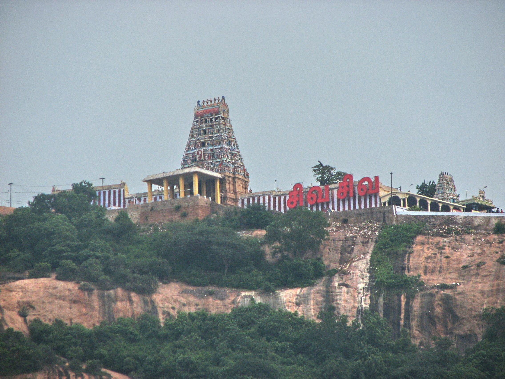

ARTHANAREESHWARAR HILL TEMPLE
FAMOUS SHIVA TEMPLE

The Ardhanareeswarar Temple in Tiruchengode is a significant Shiva temple known for its unique deity, a single image of Shiva and Parvati combined in one form, representing the unity of masculine and feminine aspects.
It is located on a hill and is considered one of the oldest temples in the region, mentioned in the Tamil work Silapathikaram. The presiding deity is depicted as half-male and half-female, vertically to represent Shiva and Parvati worshipped as one form.
It is considered one of the oldest temples in this region. Tiruchegode is the olden Poondurainadu in Kongunadu.